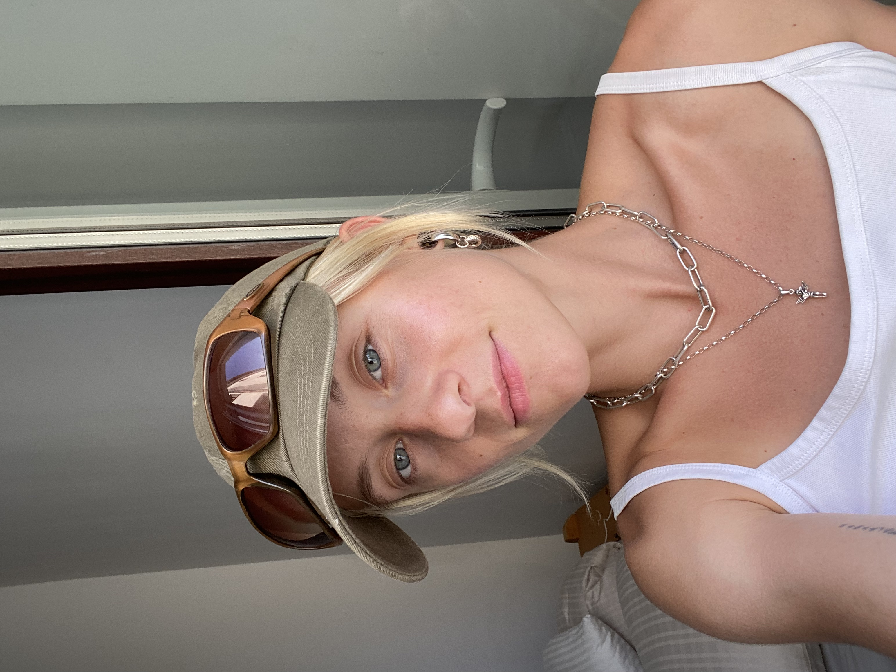

I am a 3D multimedia artist based in Berlin, working across high and low poly modeling, texturing, rendering and 3D animation. I create conceptual artworks for brand campaigns as well as immersive experiences in augmented and virtual reality.